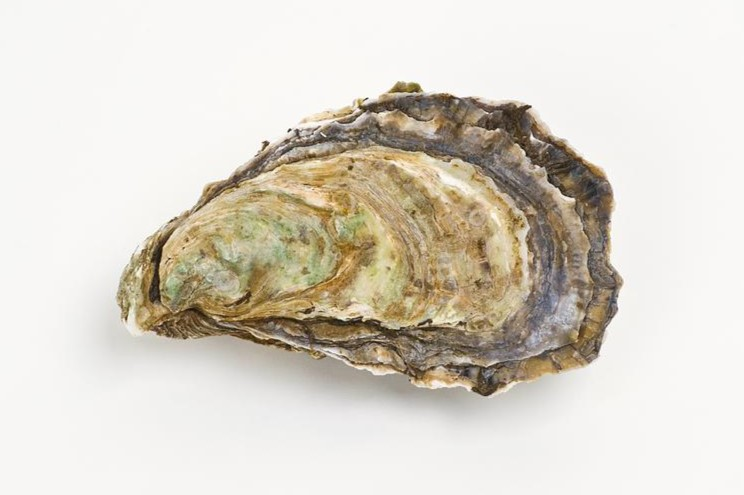

Stress hardening in Pacific oysters
Project planning for stress hardening experiment with Pacific oysters


No matching items
Stress hardening in Pacific oysters
Project planning for stress hardening experiment with Pacific oysters